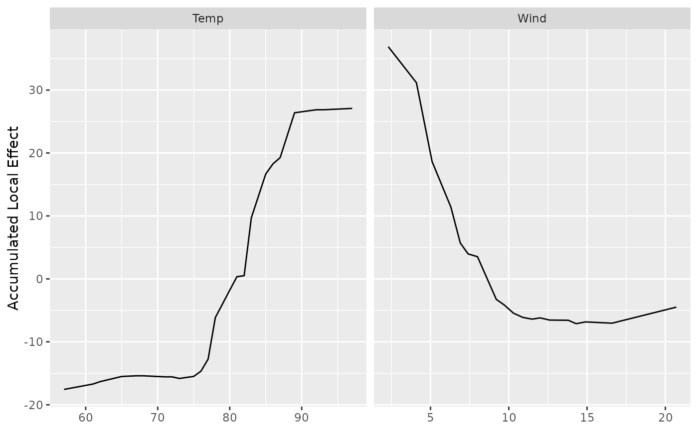
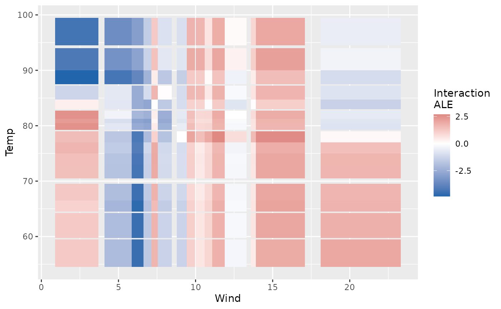

A partial dependence curve (gg_partial_rfsrc) marginalizes
the forest's prediction by averaging over the joint distribution of the
other predictors – a computation that is misleading when predictors are
correlated, because it evaluates the forest at combinations of predictor
values that never occur together in the data. Accumulated Local Effects
(Apley and Zhu, 2020) avoid this by only ever perturbing a predictor
within small local neighborhoods of its own observed values, then
accumulating those local effects into a global curve.
Usage
gg_ale_rfsrc(
rf_model,
xvar.names,
xvar2.name = NULL,
newx = NULL,
cat_limit = 10,
n_eval = 25,
which.class = 1
)Arguments
- rf_model
A fitted
rfsrcobject. Regression and classification forests only; survival is not yet implemented (seegg_shap, which has the same limitation).- xvar.names
Character vector of predictor names to compute ALE for. When
xvar2.nameis supplied, this must name exactly one predictor.- xvar2.name
Optional single character name of a second predictor. When supplied, second-order (interaction) ALE is computed for the pair
xvar.namesxxvar2.nameinstead of first-order ALE. Both predictors must be continuous in this version (seecat_limit).- newx
Optional
data.frameof predictor values to evaluate ALE at. Defaults to the training data stored inrf_model$xvar. All column names must matchrf_model$xvar.names.- cat_limit
Variables with fewer than
cat_limitunique values innewxare treated as categorical; all others are continuous. Defaults to 10.- n_eval
Number of quantile bins used for a continuous predictor's ALE grid (first-order) or per axis (second-order). Defaults to 25.
- which.class
For classification forests, the class (integer column index into the predicted-probability matrix) whose ALE is computed. Defaults to 1.
Value
For first-order ALE (xvar2.name = NULL), a named list with
two elements, classed "gg_ale_rfsrc":
- continuous
A
data.framewith columnsx(the bin edges, numeric),yhat(the centered ALE value at each edge), andname(variable name), for all continuous predictors.- categorical
The same columns but
xkept as afactorin the model's level order, for low-cardinality predictors.
For second-order ALE (xvar2.name supplied), a data.frame
classed "gg_ale_interaction" with columns x (grid values
of xvar.names), y (grid values of xvar2.name),
ale (the interaction surface value), name1, and
name2.
Details
For a continuous predictor, gg_ale_rfsrc bins the observed values
into n_eval quantile-based intervals. Within each bin, every
observation's predictor value is replaced first with the bin's lower edge
and then with its upper edge (all other predictors held at that
observation's own values), and the average change in prediction is the
bin's local effect. These local effects are accumulated (cumulatively
summed) across bins and centered to have a weighted mean of zero, giving a
curve that is directly comparable to gg_partial_rfsrc's
output but immune to extrapolation into implausible predictor
combinations.
For a categorical predictor, the model's own factor level order is used as the "grid": the local effect for the step from level \(k\) to level \(k+1\) is estimated only from observations actually at level \(k+1\), comparing their prediction at that level against the counterfactual of level \(k\). Relevel the predictor before fitting the forest to control this ordering.
Supplying xvar2.name switches to second-order (interaction) ALE
between xvar.names and xvar2.name, isolating the part of
their joint effect that is not explained by either variable's own main
effect – the ALE analogue of an interaction term. This is computed on a
2-D grid of bins using the same local-perturbation idea, with the main
effects removed via a row/column/grand weighted-mean decomposition (the
same device used to isolate an interaction term in a two-way ANOVA). A
purely additive forest returns an all-zero surface.
References
Apley, D. W. and Zhu, J. (2020). Visualizing the effects of predictor variables in black box supervised learning models. Journal of the Royal Statistical Society Series B, 82(4), 1059-1086.
Examples
## ------------------------------------------------------------
## regression, first-order ALE
## ------------------------------------------------------------
airq.obj <- randomForestSRC::rfsrc(Ozone ~ ., data = na.omit(airquality),
ntree = 100)
ale_dta <- gg_ale_rfsrc(airq.obj, xvar.names = c("Wind", "Temp"))
plot(ale_dta)

# \donttest{
## ------------------------------------------------------------
## second-order (interaction) ALE between two continuous predictors
## ------------------------------------------------------------
ale_int <- gg_ale_rfsrc(airq.obj, xvar.names = "Wind",
xvar2.name = "Temp", n_eval = 15)
plot(ale_int)

# }